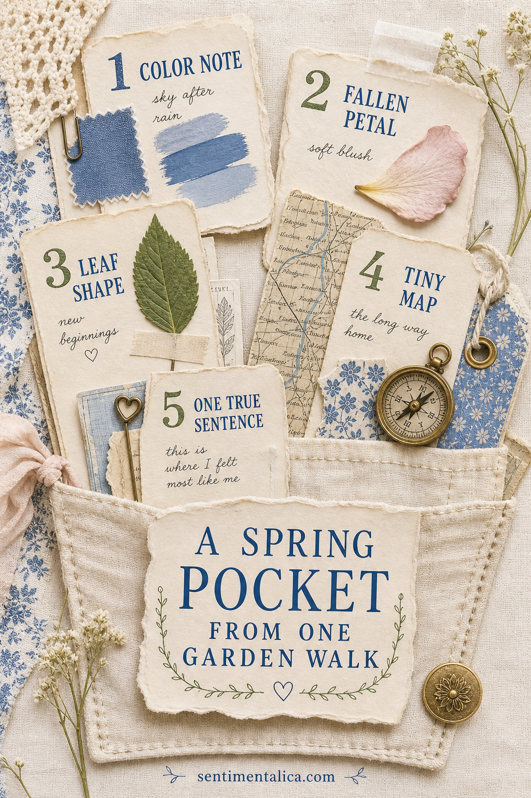
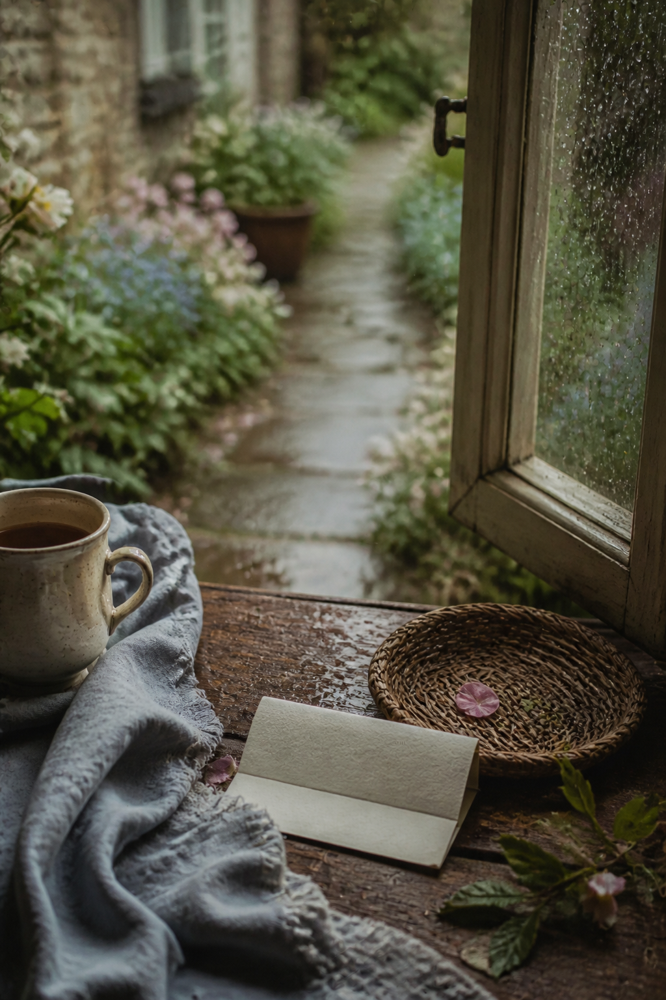

A garden walk can become a journal page without picking armfuls of flowers. Notice one color, one fallen piece, one shape, one turn in the path, and one sentence that belongs only to that morning.

Record the color before it changes
Carry a small card and pencil. Write “sky after rain,” “new leaf,” or another color description, then add a quick pencil shade or watercolor mark at home. The imperfect match becomes part of the memory.
Take only what has fallen
A loose petal or leaf can mark the season without disturbing the garden. Let it dry fully between clean sheets. If collecting is not permitted, sketch its outline or photograph it and leave it where it is.
Notice a shape
Trace a serrated leaf edge, a curved stem, or the silhouette of a pot. Repeat that shape once on the pocket flap or label. This creates a visual connection without needing many botanical images.

Draw the tiniest map
Your map does not need scale. Mark the gate, the place you stopped, and the path home. Use one line and three symbols. A map turns a pretty collection into evidence of a particular place.
Write one true sentence
Finish with what the image cannot show: the smell after rain, a bird heard behind the hedge, or the moment you decided to turn back. Fold the sentence and place it inside the pocket.
Build the pocket simply
Use sturdy cream paper, glue only the sides and bottom, and add a thumb notch. Mount fragile natural pieces on separate cards. Date the pocket itself so loose contents can always find their way home.
Add sound and weather
Before you go indoors, note one sound and one weather detail. “Water moved through the gutter” is more evocative than “rainy day.” “Cold air at the gate” gives the page a physical feeling. These observations need no illustration; a small handwritten strip is enough.
Use a respectful collecting rule
Take only loose, plentiful material from places where collecting is allowed. Never pick protected plants or remove pieces from a private garden without permission. A rubbing, quick sketch, or color note often preserves the experience more faithfully than carrying the object home.
Prepare natural pieces safely
Brush away soil and inspect leaves for moisture or insects. Press flat pieces between absorbent sheets and change the paper if it becomes damp. Wait until the material feels papery and fully dry before sealing it into a journal. Mounting it on a removable card makes future care easier.
Turn the walk into a repeatable ritual
Keep several blank cards and one envelope beside the door. Take the same short route after rain, on the first warm evening, and when blossoms begin to fall. Repeating the route makes small seasonal changes easier to notice.
Leave room for another walk later in the season. The first pocket may hold rain and bare branches; the next may carry deeper green. Together they show spring arriving slowly.
Image note: Some visuals in this article were created with AI and curated by Sentimentalica.